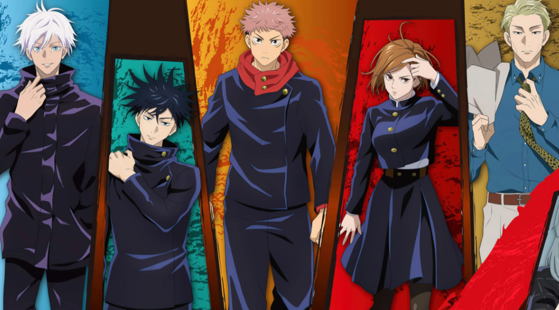

Jujutsu Kaisen
merupakan manga (komik jepang) yang sangat populer yang kemudian diadaptasi menjadi serial anime.
Manga ini mengisahkan Yuji yang masuk ke Klub Penelitian Ilmu Gaib, agar bisa bersantai dan bergaul dengan para senior.
Sayang, senior-seniornya telah membuka segel dari jimat kutukan tingkat tinggi di sekolahnya, dan menarik roh kutukan muncul.
Jimat tersebut menarik Jurei, yaitu makhluk mirip monster yang muncul melalui emosi negatif manusia.
Yuji yang tidak mampu mengalahkan Jurei akhirnya menelan jimat kutukan berupa "jari" dari Ryomen Sukuna, dan menjadi wadah dari Sukuna,
roh terkuat yang pernah ada. Hal itu untuk melindungi teman dan senior-seniornya.
Hebatnya lagi, Yuji masih bisa mengendalikan tubuhnya meski telah dirasuki.
Jujutsu Kaisen menjadi manga terpopuler di Jepang, bahkan bersaing ketat dengan Demon Slayer: Kimetsu no Yaiba.
Setelah diterbitkan untuk pertama kalinya pada tahun 2018, Jujutsu Kaisen telah memenangkan berbagai penghargaan,
termasuk Anime of the Year dalam Crunchyroll Anime Awards 2021.
Selain itu, manga ini juga telah mencapai penjualan lebih dari 50 juta kopi di seluruh dunia hingga tahun 2023.
Dengan plot yang memikat dan karakter-karakter yang memiliki kedalaman emosional,
Jujutsu Kaisen terus mendapatkan penggemar baru dan menjadikan manga ini sebagai salah satu yang terbaik dalam dekade ini.
